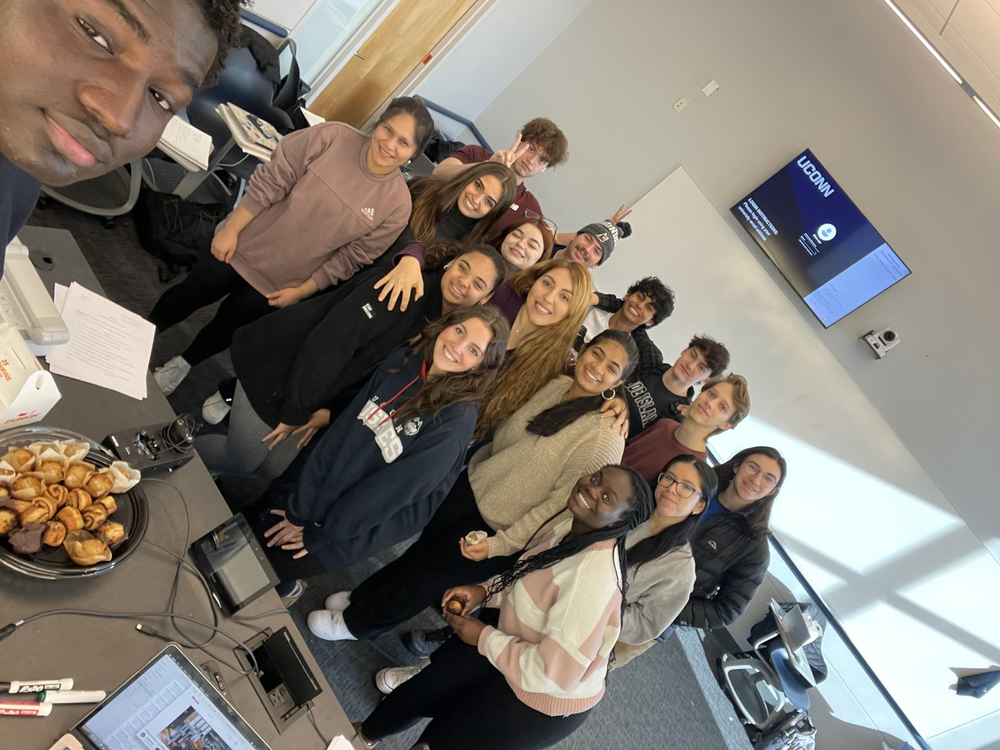

Enseignante d’histoire, Washtenaw Community College · Chercheuse associée, université du Michigan–Dearborn
KatayounMatloubi
کتایون مطلوبی
Spécialiste de la littérature, du cinéma et du témoignage de la Shoah, je travaille sur des sources françaises, persanes et anglaises.
Une question traverse ces recherches : que peuvent dire la littérature et le cinéma de la violence lorsque la représentation directe risque de laisser croire à un savoir complet ?
Doctorat en littérature française contemporaine et études francophones, université du Connecticut, 2025Research Fellow, Hadassah-Brandeis Institute, université BrandeisAnn Arbor (Michigan)
Bourses et programmes de rechercheUnited States Holocaust Memorial Museum · Hadassah-Brandeis Institute · USC Shoah Foundation · Trans-Atlantic Summer Institute, université du Minnesota · Dodd Center for Human Rights
Actualités
Version révisée de « Knowing Non-Knowledge » soumise à Memory Studies.
« The Persistence of the Void » publié en ligne dans Holocaust Studies, en libre accès.
J’enseigne le cours HST 109, The Early Modern World, au Washtenaw Community College.
Gelman International Research Workshop à l’United States Holocaust Memorial Museum, et recherches en salle de lecture du Shapell Center.
Communication au musée POLIN, Varsovie : « AI, Translation, and Holocaust Memory Distortion ».
01
Recherche
Trois projets en cours, et les travaux qui s’y rattachent.
01 · LivreManuscrit achevé · publication en préparation
The Rhetoric of Obliquity: Anna Langfus, Holocaust Cinema, and the Ethics of Indirection
Anna Langfus, le cinéma de la Shoah et l’éthique du détour
Quand le détour préserve-t-il la difficulté de la catastrophe, et quand protège-t-il au contraire un narrateur, un artiste ou un public de ce qu’il faudrait savoir ?
Rescapée juive polonaise, Anna Langfus a publié trois romans en français et reçu le prix Goncourt en 1962 ; elle demeure pourtant en marge des histoires anglophones de la littérature de la Shoah. Le livre voit en elle à la fois l’inventrice d’une écriture oblique et sa première critique, puis suit au cinéma les questions qu’elle a posées.
Sa thèse centrale : le silence et la retenue n’ont rien d’éthique en soi. Leur portée dépend de ce que l’œuvre tait, à qui, et pourquoi.
Issu de la thèse Representing the Holocaust in Novels and Films: Anna Langfus and Six Directors
Travail sur des documents d’archives, Curt C. and Else Silberman Faculty Seminar, United States Holocaust Memorial Museum, juin 2025.
02 · Recherche en archivesDépouillement en cours
Classified Between: An Iranian Jewish Student in Vichy France, 1941–1944
Un étudiant juif iranien dans la France de Vichy
Comment les administrations de Vichy classaient-elles les Juifs étrangers, et à quel moment ces catégories ont-elles pesé sur leur sort ?
Le projet suit Menashe Ezrapour, étudiant ingénieur juif originaire de Hamadan, à travers les dossiers de police et d’internement, le journal qu’il tint en français en 1941 – aujourd’hui conservé au United States Holocaust Memorial Museum (USHMM) – et son témoignage ultérieur. Je ne pars pas du principe que sa nationalité iranienne l’a protégé : je cherche à comprendre comment chaque administration a rendu cette nationalité lisible, puis opérante.
En août 2026, j’ai travaillé sur les microfilms de la police française (RG-43.016M) au Shapell Center du Musée et réuni plusieurs centaines de documents administratifs.
03 · MéthodeEn cours
Traduction automatique et témoignage de la Shoah
Une traduction peut préserver le sens des mots tout en effaçant une hésitation, un euphémisme ou une ambiguïté essentiels au témoignage.
Je compare traductions humaines et automatiques de témoignages de la Shoah en persan et en français. Les passages sont alignés, les glissements d’agentivité et d’incertitude annotés, et chaque interprétation est confrontée à l’original.
Présenté au colloque « Confronting Holocaust Distortion » du musée POLIN, à Varsovie, en novembre 2025.
Ce qu’une traduction correcte peut perdre
Deux exemples tirés de ma communication au musée POLIN, Varsovie, en 2025.
Original
Traduction automatique
Ce que le lecteur perd
Ruthy a ensuite été envoyée en Pologne et elle a disparu.Source: Yad Vashem, Children in the Holocaust exhibition
Ruthy was then sent to Poland and she disappeared.
Dans le discours français sur la Shoah, « elle a disparu » signifie : tuée après la déportation. Le lecteur anglophone comprend seulement qu’on ignore où elle se trouve.
منشه را … جابهجا میکردندSource: IranWire, testimony of Menashe Ezrapour
Menashe was moved between various labor camps.
La phrase persane a un sujet implicite : « on le déplaçait ». Le passif anglais efface la question de savoir qui le déplaçait, et pourquoi.
Autres travaux
Deuxième axeL’exil dans la littérature et l’art francophones
Les romans de Négar Djavadi et l’œuvre de Zineb Sedira : comment migration et colonisation entrent dans le récit en français sans se confondre avec le témoignage de la Shoah.
Article en préparationLes sous-titres d’Ida et de La Zone d’intérêt
Ce que des sous-titres anglais ajoutent à deux films sur la Shoah, et le point où leur analyse cesse de faire preuve.
Essai · TASI 2026Hors de Téhéran : lisibilité révolutionnaire et esthétique de la révolte, 1967–1979Out of Tehran: Revolutionary Legibility and the Aesthetics of Revolt, 1967–1979
Comment l’image de la révolution iranienne est devenue lisible pour la gauche radicale européenne, de Foucault à Genet.
Communication · USHMM 2026Négociation fragile et contraction éthiqueFragile Negotiation and Ethical Contraction
Échanges, silences et rétrécissement de la vie sociale à Gurs, aux Milles et à Bergen-Belsen.
02
Publications
État en novembre 2026. Les titres sont donnés tels qu’ils ont été publiés ou soumis.
Articles publiés
Holocaust Studies
The Persistence of the Void: Formal Absence in Holocaust Representation from Langfus to Ida
ChicagoMatloubi, Katayoun. “The Persistence of the Void: Formal Absence in Holocaust Representation from Langfus to Ida.” Holocaust Studies, published online October 16, 2026. https://doi.org/10.1080/17504902.2026.2742079.MLAMatloubi, Katayoun. “The Persistence of the Void: Formal Absence in Holocaust Representation from Langfus to Ida.” Holocaust Studies, 2026, https://doi.org/10.1080/17504902.2026.2742079.APAMatloubi, K. (2026). The persistence of the void: Formal absence in Holocaust representation from Langfus to Ida. Holocaust Studies. https://doi.org/10.1080/17504902.2026.2742079BibTeX
@article{matloubi2026void,
author = {Matloubi, Katayoun},
title = {The Persistence of the Void: Formal Absence in Holocaust Representation from Langfus to Ida},
journal = {Holocaust Studies},
year = {2026},
doi = {10.1080/17504902.2026.2742079}
}
L’article récuse l’idée que l’absence formelle serait éthique par nature dans la représentation de la Shoah. Il lit Langfus, Shoah, Le Fils de Saul et Ida de manière asymétrique, comme une généalogie de la médiation.
PubliéPublié en ligne le 16 octobre 2026
Accepté, à paraître
Holocaust and Genocide Studies
Review of Roy Grundmann, On Shoreless Sea: The MS St. Louis Refugee Ship in History, Film, and Popular Memory (SUNY Press, 2025)
Katayoun Matloubi
AcceptéCompte rendu · à paraître
Articles en évaluation ou en révision
Memory Studies
Knowing Non-Knowledge: Perpetrator Memory and Mnemonic Form in The Zone of Interest
Katayoun Matloubi
Le film de Jonathan Glazer ne se contente pas d’illustrer la banalité du mal selon Arendt : par le cadrage, la durée et le son, il installe le spectateur dans le cloisonnement même de la perception qu’il met en scène.
En évaluationVersion révisée soumise le 13 novembre 2026
Journal of Holocaust Research
Oblique Testimony: Holocaust Representation in Literature and Visual Art through Langfus and Boltanski
Katayoun Matloubi et José Luis Falconi
Une lecture croisée de la fiction d’Anna Langfus et des installations de Christian Boltanski.
En révisionDeuxième révision en préparation
Livre
Manuscrit
The Rhetoric of Obliquity: Anna Langfus, Holocaust Cinema, and the Ethics of Indirection
Katayoun Matloubi
Issu de la thèse Representing the Holocaust in Novels and Films: Anna Langfus and Six Directors (université du Connecticut, 2025).
Manuscrit achevéPublication en préparation
Travaux en cours
Article en cours
Iran, Jews, Israel, and Palestine under the Pahlavi Dynasty (1925–1979): Strategic Pragmatism, Ideological Duality, and Post-Revolutionary Legacies
Katayoun Matloubi
En cours de rédaction
03
Démarche
Face à un texte, je me demande sur quoi il s’appuie, et à quel moment l’on passe de la source à l’interprétation.
Si je suis attentive à la différence entre le silence imposé par le pouvoir et celui qui préserve une vérité difficile, je le dois en partie à ma formation dans la tradition littéraire persane, familière de la parole voilée et indirecte. Ce regard ne confond pas l’histoire iranienne avec la Shoah ; il oblige plutôt à se demander quel silence l’on interprète, dans quelles conditions et à quelles fins.
Mes projets ont en commun une même méthode : être attentive à ce que les textes, les archives et les traductions permettent de savoir, et à ce que leur forme rend difficile à savoir. Elle conjugue lecture rapprochée, travail d’archives et comparaison numérique rigoureuse.
Quatre questions que je pose à une œuvre
01
Que tait l’œuvre ?
02
À qui le tait-elle ?
03
Quelle vulnérabilité, quelle autorité, quelle image de soi ce silence protège-t-il ?
04
Cette retenue approfondit-elle l’attention à l’histoire, ou permet-elle de s’y soustraire ?
Les questions qui guident le livre · The Rhetoric of Obliquity
04
Enseignement
Cours
Hiver 2027
HST 230 · Histoire de la ShoahWashtenaw Community College · responsable du cours
FREN 1101–1102 · Français débutant I et IIUniversité du Connecticut · onze groupes sur sept semestres, en pleine responsabilité
2013–2018
Français et anglaisInstitut de langues Tak Sokhan, Tabriz
Projet de cours
La révolution iranienne : histoire, mémoire et politique transnationaleSources persanes traduites, histoire orale et fonds de l’Inclusive History Project
“Un cours doit être exigeant sur ce que les étudiants apprennent, et souple sur la manière dont ils y parviennent.”
Extrait de ma philosophie d’enseignement
La question que je me pose en concevant un cours : à la fin du semestre, qu’est-ce que chaque étudiant saura faire, dire ou démontrer qui lui était difficile au départ ?
Évaluations des étudiants · FREN 1101, automne 2023
4,7Appréciation globale de l’enseignantesur 5
4,9Intérêt suscité pour la matièremoyenne du département : 4,5
4,9Méthodes favorisant l’apprentissagemoyenne du département : 4,4
“We were always pushed to speak in each class which really helped students learn how to speak more in French.”
“I love the way Madame Katayoun really focuses on engaging the entire class with the material.”
Taux de réponse : 81 % (13 sur 16). Les commentaires sont cités dans leur langue d’origine.
Belfer National Conference for Holocaust Education, USHMM : certificats de formation (24 heures chacun), 2024 et 2025.

Cours de français débutant à l’université du Connecticut.
05
Parcours
Postes universitaires
En cours Depuis 2026
Chercheuse associée (Research Associate)
Inclusive History Project, université du Michigan–Dearborn
Projet « The University of Michigan in the Middle East » : sources en persan et en anglais sur l’histoire de la diaspora iranienne.
En cours Depuis 2025
Chercheuse (Research Fellow)
Hadassah-Brandeis Institute, université Brandeis
Rattachement de recherche ; bourse de mobilité du HBI (2026).
En cours Depuis 2026
Enseignante d’histoire
Washtenaw Community College
Histoire du monde à l’époque moderne ; histoire de la Shoah.
2025–2026
Chercheuse associée non résidente
USC Shoah Foundation
Recherches sur le témoignage.
2024–2025
Chercheuse
UConn Global Affairs et Dodd Center for Human Rights
Recherches en droits humains, université du Connecticut.
2021–2024
Doctorante chargée d’enseignement
Département des littératures, cultures et langues, université du Connecticut
Français débutant, en pleine responsabilité.
Histoire orale et médiation
2026
Certification à la conduite d’entretiens d’histoire orale
USC Shoah Foundation
Entretiens centrés sur le témoin et normes de description archivistique ; deux séances d’entretien en français, juillet et août 2026.
En cours Depuis 2024
Conseillère pédagogique
Holocaust Awareness Museum and Education Center, Philadelphie
Programmes d’enseignement de la Shoah ; relecture scientifique des ressources pédagogiques.
2022–2023
Rédactrice d’exposition (contrat)
Museum of Tolerance, Los Angeles
Notes de recherche et textes de salle pour une exposition sur l’antisémitisme à Téhéran ; traduction vers l’anglais d’enregistrements en persan.
2022–2023
Recherche en histoire orale
Fonds juif iranien de l’UCLA · Iranian Oral History Project de Harvard
Analyse de témoignages de Juifs iraniens en persan.
2020
Traductrice bénévole
Organisation des Nations unies
Responsabilités collectives
En cours Depuis 2026
Membre du comité de pilotage
Abrahamic Programs, université du Connecticut
2025
Organisation et présidence d’un panel
SAMLA, Atlanta
« Knowledge After Catastrophe: Trauma, Testimony, and the Ethics of Representation ».
06
Bourses et distinctions
2026Jacob and Yetta Gelman International Research WorkshopUnited States Holocaust Memorial Museum · « The Social Worlds of Internment », 3–14 août ; recherches en salle de lecture du Shapell Center
2026Broadening Academia Initiative Writing RetreatUnited States Holocaust Memorial Museum · participante sélectionnée
2026Trans-Atlantic Summer Institute (TASI)Université du Minnesota, avec le soutien du DAAD · université Leuphana de Lunebourg et Centre Marc-Bloch, Berlin
2026Bourse de mobilité de rechercheHadassah-Brandeis Institute, université Brandeis
2025Curt C. and Else Silberman Faculty SeminarUnited States Holocaust Memorial Museum · « Jewish Experiences Under Nazi and Soviet Occupation of Eastern Europe »
2025Prix George Mills HarperSAMLA 97 · l’une des deux lauréates
2025Bourse de colloque GAIN25German Academic International Network
Université du Connecticut
Bourse d’été pour l’achèvement de la thèse (2025)
Prix HRRC de participation à un colloque international (2025)
Fonds de mobilité Global Affairs (2025)
Bourse de participation à un colloque (2023)
Patti Parlette Peace Prize (2023)
Bourse de la Graduate School (2021, 2023)
07
Interventions
2026
When Tehran Opened Its Doors: Iranian Hospitality and the Jewish Refugees of the Second World War
Quand Téhéran ouvrit ses portes : l’hospitalité iranienne et les réfugiés juifs de la Seconde Guerre mondiale
Holocaust Awareness Museum and Education Center, Philadelphia
Sur invitation
2026
Listening in the Aftermath: Sound, Memory, and Oblique Testimony in the Art of Boltanski, Shalev-Gerz, Sedira, and Bartana
Écouter l’après : son, mémoire et témoignage oblique chez Boltanski, Shalev-Gerz, Sedira et Bartana
20th- and 21st-Century French and Francophone Studies International Colloquium, University of Notre Dame
Communication
2026
Genocide, Historical Trauma, and Survivor Testimony as Frameworks for Understanding Oppression
Génocide, trauma historique et témoignage des survivants : des cadres pour penser l’oppression
BASC 5300: Human Oppression, University of Connecticut
Intervention dans un cours
2025
AI, Translation, and Holocaust Memory Distortion
IA, traduction et distorsion de la mémoire de la Shoah
POLIN Museum of the History of Polish Jews, Warsaw
Communication
2025
Disorienting Knowledge: Négar Djavadi’s Philosophical Fiction at the Crossroads of Identity and Aesthetics
Un savoir qui désoriente : la fiction philosophique de Négar Djavadi, entre identité et esthétique
SAMLA, Atlanta
Communication
2025
Coded Racial Rhetoric in Digital Discourse: Sustaining Human Rights against Far-Right Threats to Democracy
Rhétorique raciale codée dans les discours numériques : défendre les droits humains face aux menaces de l’extrême droite contre la démocratie
University of Tübingen · with C. Mortley
Communication
2024
The Art of Oblique Testimony: Anna Langfus and Christian Boltanski’s Vague Renarration of Trauma
L’art du témoignage oblique : Anna Langfus, Christian Boltanski et la renarration incertaine du trauma
20th/21st-Century French & Francophone Studies International Colloquium · with José Luis Falconi
Communication
2024
Read Silence: Why and How?
Lire le silence : pourquoi et comment ?
Roundtable, Hadassah-Brandeis Institute
Sur invitation
2023
Rhetorics of Obliquity: The Necessity of Traumatic Representation
Rhétoriques de l’oblique : la nécessité de représenter le trauma
Department of Art, University of Connecticut
Sur invitation
2023
Holocaust Testimony and the Ethics of Representation
Le témoignage de la Shoah et l’éthique de la représentation
Public roundtable and screening of Claude Lanzmann: Spectres of the Shoah, University of Connecticut
Rencontre publique
08
Biographie
Mes recherches portent sur la Shoah et la mémoire, l’histoire des Juifs d’Iran et les trajectoires transnationales des Juifs du Moyen-Orient.
Je m’appuie sur des sources en français et en persan, sur la traduction, sur les méthodes de l’histoire orale et sur la médiation muséale pour interroger le témoignage et l’appartenance juive. Ma thèse, soutenue à l’université du Connecticut sous la direction de Roger Célestin, est à l’origine de mon livre.
Formée en langue et littérature françaises aux universités de Tabriz et Shahid Beheshti avant mon doctorat, j’ai reçu en 2023 le Patti Parlette Peace Prize de l’université du Connecticut.
Le CV complet recense l’ensemble des postes, publications, interventions, bourses et formations.
Études sur la Shoah et les génocidesLes Juifs d’Iran dans la France en guerreInternement, nationalité et statut des minorités sous VichyTémoignage et histoire oraleLittérature et cinéma français et francophonesTraductologie et humanités numériquesRecherche en archives (microfilms de la police française, USHMM)Lecture rapprochée et analyse filmiqueAnalyse de sources françaises et persanes, comparaison des témoignages
Formation
2025
Doctorat en littérature française contemporaine et études francophonesUniversité du Connecticut · direction : Roger Célestin
2025
Certificat d’études supérieures en droits humainsUniversité du Connecticut
2018
Master de littérature françaiseUniversité Shahid Beheshti, Téhéran · mémoire sur Annie Ernaux
2015
Licence de langue et littérature françaisesUniversité de Tabriz
Langues
AzərbaycancaAzéri — langue maternelle
فارسیPersan — niveau natif (bilingue)
FrançaisFrançais — niveau proche de celui d’une locutrice native ; langue de recherche, d’enseignement et de publication